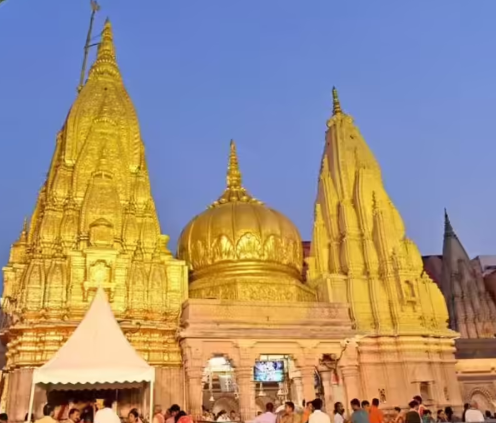
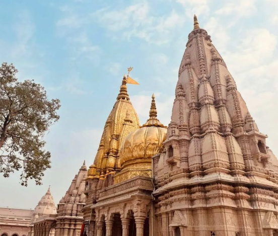
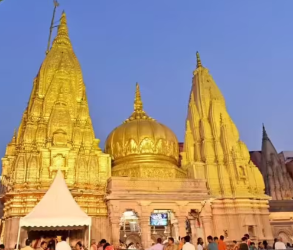
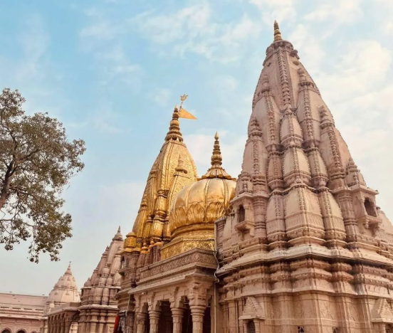
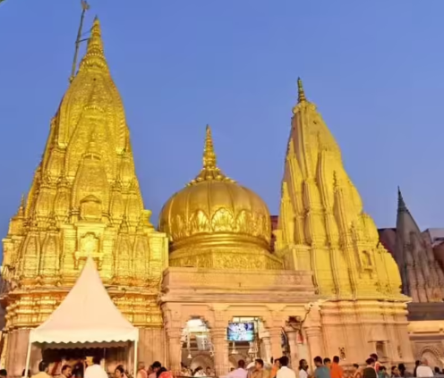
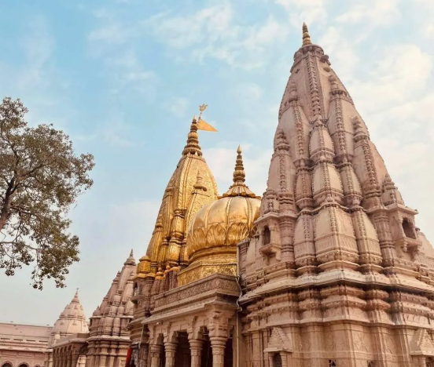

One of the 12 Jyotirlingas of Lord Shiva – Varanasi
Temple Gallery


About the Temple
The Kashi Vishwanath Temple, located in the holy city of Varanasi, is one of the most sacred temples in Hinduism. Dedicated to Lord Shiva, it represents the spiritual core of India where every devotee wishes to attain moksha (liberation). The golden dome and the sacred Jyotirlinga make it a major religious landmark.
History & Heritage
The original temple is said to date back over 1000 years.
It was destroyed and rebuilt multiple times, most famously by Maharani Ahilyabai Holkar in 1780 CE.
The golden spire and dome were added by Maharaja Ranjit Singh of Punjab in 1835.
In 2021, the Kashi Vishwanath Corridor was inaugurated, connecting the temple directly with the Ganga River.
Entry Rules & Guidelines
Photography and videography are strictly not allowed inside the temple.
Foreigners and non-Hindus can visit certain areas but cannot enter the Garbhagriha (main sanctum).
Dress modestly – Indian traditional attire preferred. Avoid shorts or sleeveless clothes.
Mobile phones, cameras, and leather items must be deposited at the security counter.
Foreign visitors must carry a valid ID (passport).
Darshan & Aarti Timings
Mangala Aarti: 3:00 AM – 4:00 AM
Bhog Aarti: 11:15 AM – 12:20 PM
Sandhya Aarti: 7:00 PM – 8:15 PM
Shayan Aarti: 9:00 PM – 10:30 PM
Entry Fee: Free for general darshan; Aarti tickets ₹300–₹1500 (foreigners slightly higher).
How to Reach
By Air: Lal Bahadur Shastri International Airport – 25 km from temple.
By Train: Varanasi Junction – 5 km | Manduadih Station – 7 km.
By Road: Regular auto, taxi, and e-rickshaw services from any point in Varanasi.
Nearest Ghat: Dashashwamedh Ghat (1 km, walking distance).
Accommodation & Facilities
There are numerous dharamshalas, guest houses, and hotels near the temple for pilgrims and visitors.
Official Kashi Vishwanath Guest House for devotees.
Hotels like Ramada, Taj Ganges, Guleria Kothi for foreign visitors.
Free cloakroom and luggage deposit counters near the entrance.
Separate queues for women, senior citizens, and foreign tourists.
Rituals & Beliefs
Devotees offer Ganga water, bilva leaves, and prayers to the Jyotirlinga. It is believed that worshipping Lord Vishwanath and bathing in the Ganga grants moksha — liberation from rebirth.
Travel Tips for Visitors
Best visiting months: October to March.
Carry water and walk comfortably – the temple lanes (Vishwanath Gali) are narrow.
Don’t accept unauthorized guides or touts.
Keep footwear outside; you can hire a locker near the entrance.
Book Aarti tickets only from the official counter or website.
Nearby Attractions
Dashashwamedh Ghat – 1 km
Manikarnika Ghat – 1.2 km
Sankat Mochan Temple – 5 km
Banaras Hindu University (BHU) – 6 km
Sarnath – 10 km
Disclaimer
The information provided here is for educational and travel purposes only. OK VARANASI is not affiliated with the official Kashi Vishwanath Temple Trust. For official timings or booking, visit shrikashivishwanath.org.


 


